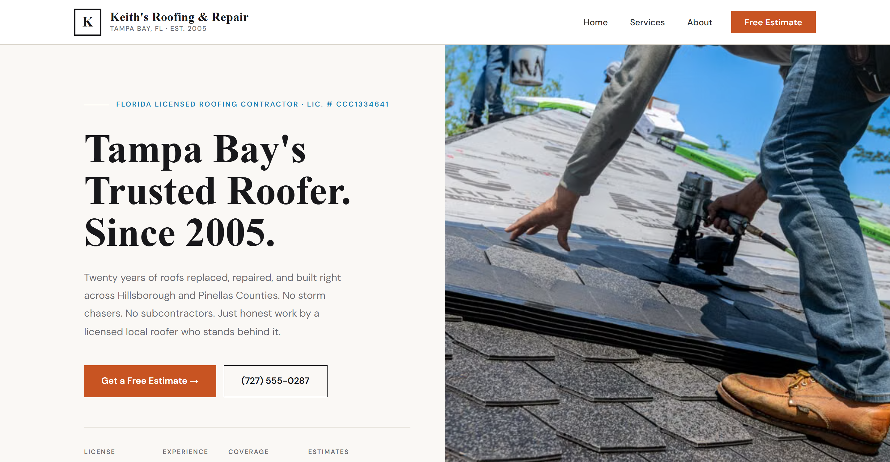

In 2026, the U.S. roofing industry is a $92.5 billion market with more than 109,000 active roofing businesses competing for the same homeowners (IBISWorld, 2026). Most of those businesses are chasing the same searches: "roof repair near me," "roofing contractor," and, after a storm, a sudden flood of "emergency roof repair" queries.
Roofing SEO shares the same foundation as any local trade, GBP, reviews, service pages, citations, but carries one dynamic most other trades don't: demand that arrives in sudden, unpredictable bursts tied to weather. Ranking well before that burst happens is what separates the roofer who captures it from the one who watches a competitor capture it instead.
Key Takeaways
- 109,000+ roofing businesses compete nationally for the same searches (IBISWorld, 2026).
- Storm-related search demand spikes and fades fast, ranking has to already be in place before it hits.
- Insurance-claim expertise is a trust signal specific to roofing that most competitors' content ignores.
What Actually Determines Roofing SEO Rankings?
The same core signals that drive any trade's local rankings apply here: a complete, active Google Business Profile, consistent recent reviews, service pages built for specific searches, and citation consistency. Google's own guidance states plainly that businesses with complete and accurate information are more likely to show up in local search results at all (Google Business Profile Help).
What changes for roofing is the content layer on top of that foundation. Homeowners researching a roofer aren't just checking "do they do good work," they're specifically checking whether this company understands insurance claims and storm response, since a roof replacement is often the most expensive home repair they'll ever navigate.

A CopperBuilds roofing build: license number, phone, and a clear CTA, all visible before scrolling.
Why Does Storm-Related Search Demand Need Advance Preparation?
Search interest in "emergency roof repair" and similar terms spikes sharply right after severe weather, then drops off just as fast. A page built or optimized after the storm has already started is competing against pages Google has known about and trusted for months, if not years.
The fix is building storm-damage and emergency-repair content, and making sure the GBP is fully optimized for those service categories, well ahead of the next event, not reactively during one. States like Texas, Colorado, and Nebraska see the heaviest hail-driven roofing demand annually, and roofers in high-storm regions have the clearest case for treating this as a standing priority rather than a seasonal afterthought.
Why Does Insurance-Claim Content Matter So Much Here?
A homeowner facing a storm-damaged roof is usually navigating an insurance claim for the first time, and that uncertainty is itself a search driver: "does insurance cover roof damage," "how to file a roof insurance claim." A roofing company that publishes real, specific guidance on this process is answering a question competitors are leaving unaddressed.
This isn't just content for content's sake, it's a genuine trust signal. A company that clearly understands the claims process, and says so directly on its site, reads as more credible to a homeowner already anxious about cost and process than one that only talks about shingles and warranties.
Why Does Every Roofing Service Need Its Own Page?
A homepage that mentions "repair, replacement, storm damage, inspections" in one paragraph doesn't rank for any of those searches individually. Google serves the most relevant page available, and a dedicated "Storm Damage Roof Repair" page will consistently outrank a homepage that mentions storm damage only in passing.
At minimum: roof repair, roof replacement, storm damage, inspections, and gutter services (if offered) each deserve their own page with real detail, not a shared paragraph. Service-area pages compound this further for roofers covering multiple counties or a wide metro region.
How Do Reviews Factor Into Roofing Rankings?
Reviews affect both ranking and conversion. A steady flow of recent reviews signals an active business to Google's algorithm, and a strong, current review count reduces the hesitation a homeowner feels before committing to what's often a five-figure project.
Recency matters more than raw total. A roofer adding 3-4 new reviews every month consistently outranks a competitor sitting on a larger but stagnant total from years ago. The ask should happen right after project completion, while the homeowner's relief at a finished roof is still fresh.
What Technical Basics Does a Roofing Site Need?
Three technical elements determine whether Google fully understands a roofing site or has to guess. Site speed on mobile matters especially during storm-driven search spikes, when a large share of traffic arrives on phones with weaker connections and no patience for a slow page. HTTPS is a baseline trust signal, not optional. RoofingContractor (LocalBusiness) schema gives Google structured business, service-area, and hours data it would otherwise have to infer from page text alone.
Site architecture matters too: storm-damage and emergency pages specifically should be reachable within one or two clicks from the homepage, not buried where a searcher (or Googlebot) has to hunt during exactly the moment speed matters most.
Does Off-Page Activity Matter for Roofing SEO?
Backlinks still factor into site authority, though less heavily than GBP completeness and reviews for a local roofing business. The realistic sources: manufacturer "certified installer" pages (GAF, Owens Corning, and similar brands maintain contractor directories), local Chamber of Commerce listings, and coverage from local news when a company responds visibly after a major storm event.
Skip paid bulk-backlink services. Google's systems are built to discount low-quality mass linking, and it risks doing more harm than good to a newer site's trust signals. A handful of real, relevant links, especially from manufacturer certification pages, outperforms dozens of purchased ones.
What Mistakes Are Keeping Roofers Off Page One?
A handful of mistakes come up repeatedly in roofing site and profile audits.
Wrong primary GBP category. "Roof Repair Contractor" instead of "Roofing Contractor" as the primary category narrows the searches you're eligible to appear for. Roofing Contractor is the correct primary category for most full-service companies handling both repair and replacement.
No service area pages beyond the home city. A single "serving the greater metro area" line doesn't rank for a specific neighboring town. Dedicated pages for each county or suburb served consistently outperform a generic mention.
Storm chasing without local roots. Out-of-state crews that appear after major storms and disappear afterward struggle to build the review history and citation consistency that local competitors accumulate over years. If that's not your business, saying so directly (a permanent local address, years in the community) is a real differentiator against that reputation.
No tracking set up. Without Google Search Console and GBP Insights running from day one, there's no way to tell whether a change to the site or profile actually helped, especially important given how spiky roofing search demand can be around weather events.
How Do You Measure Whether It's Working?
Three numbers matter most, and none require expensive software. Map pack appearances for core terms, checked monthly from an incognito window. GBP Insights data, calls, direction requests, and website clicks generated directly from the profile. Review velocity, the rate of new reviews per month, not the total count.
Give any change 60-90 days before judging it, with one exception: after a major storm, watch the numbers weekly for the following month. That's when the ranking work either pays off in real call volume or reveals a gap that needs fixing before the next event.
Do Roofers Need to Worry About AI Search?
In December 2025, Ahrefs analyzed 300,000 keywords and found that position-1 organic click-through rates, normally 28-35%, drop to just 12-15% when Google's AI Overview appears on the same search, a 58% decline (Ahrefs, 2025). For a homeowner asking "does insurance cover storm damage" or "how much does a roof replacement cost," being cited in the AI-generated answer is becoming as valuable as ranking below it.
The response doesn't require a separate strategy. Direct, specific FAQ content with schema markup, real answers to the insurance and cost questions homeowners actually ask, is the same content that supports both traditional ranking and AI-generated answers. Building that content well covers both.
Does Content Quality Actually Affect Roofing Rankings?
Google's E-E-A-T framework, experience, expertise, authoritativeness, trust, increasingly favors content written by people who visibly do the work, not generic articles assembled to hit a word count. For roofing specifically, that means content should read like it comes from someone who's actually inspected storm damage and filed insurance claims, not a template swapped across every roofing site in the country.
Concretely: real project photos instead of stock images, specific numbers instead of vague ranges, and author attribution tying the content back to an actual person at the company. This is a genuine differentiator, most competitor roofing sites still run generic, unattributed content.
How Long Does It Take for a Roofing Company to Rank?
Most roofing companies see initial Google Maps movement within 60-90 days of consistent GBP and review work. Organic rankings for competitive terms typically take 4-6 months. Given how unpredictable storm timing is, the honest advice is to start this work now rather than waiting for the next weather event to create urgency.
Want to be ready before the next storm, not scrambling after it?
CopperBuilds builds websites and local SEO systems for roofing companies, storm-damage content and GBP management included in every monthly retainer.
Get a Free SEO ReviewFrequently Asked Questions
Luis builds conversion-focused websites for small businesses across the US. He's audited over 50 local service business websites and writes about what actually moves the needle on rankings and conversions.